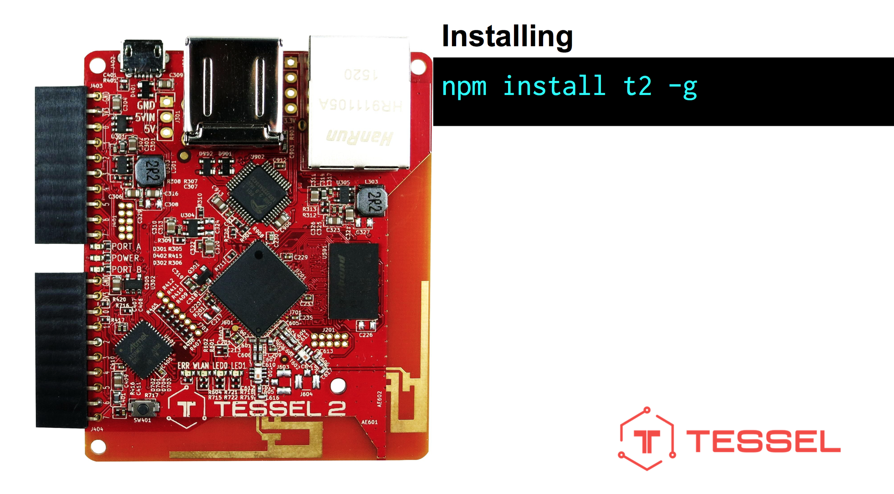

Getting Started with Tessel 2
These slides: hipsterbrown.github.io/tessel-workshop/
Wifi Info
Network: UStreamGuest
Login: vendeg22
Password: 4szigoruhinar
If you haven't already, install Node
Download Node- This workshop is based heavily on a workshop developed by Francis Gulotta and Rick Waldron at Bocoup
- And another workshop developed by Kelsey Breseman for the Node.js Interactive 2015 meetup
- You can find the slides for Bocoup workshop at gul.ly/3tjj
Our community guidelines
Be excellent to each otherHuge thanks to our host, Ustream
Your Presenters Today

What is Tessel?
What is Tessel?
A fully open source hardware & software platform that makes it easy and intuitive to develop Internet-connected devices
Mission Statement
Create a fully open source hardware & software platform that makes it easy and intuitive to develop Internet-connected devices. Decisions are steered by open governance, an inclusive community, and the goal of creating freely-licensed designs and tools.
CORE PHILOSOPHIES
- Developer experience is paramount.
- Device design should focus on user experience rather than on implementation.
- Openness promotes innovation.
- Tessel should be practical to use.
- Community matters.
Our hardware
Our hardware
Our hardware
Our hardware
What can Tessel do?
It’s a computer with internet- so nearly anything: tessel.io/projects
What can Tessel do?
How do I use Tessel?
It runs Node!
What can Tessel do?
What can Tessel do?
What can Tessel do?

What can Tessel do?
What can Tessel do?
What are we doing today?
tessel.github.io/t2-start/Uh oh! We ran out of slides! Feel free to try out some of the other components in your kit while we add more!
Wrapping Up
- Thank you for coming!
- Join the conversation on our community chat: Slack
- Reach out online: @TesselProject